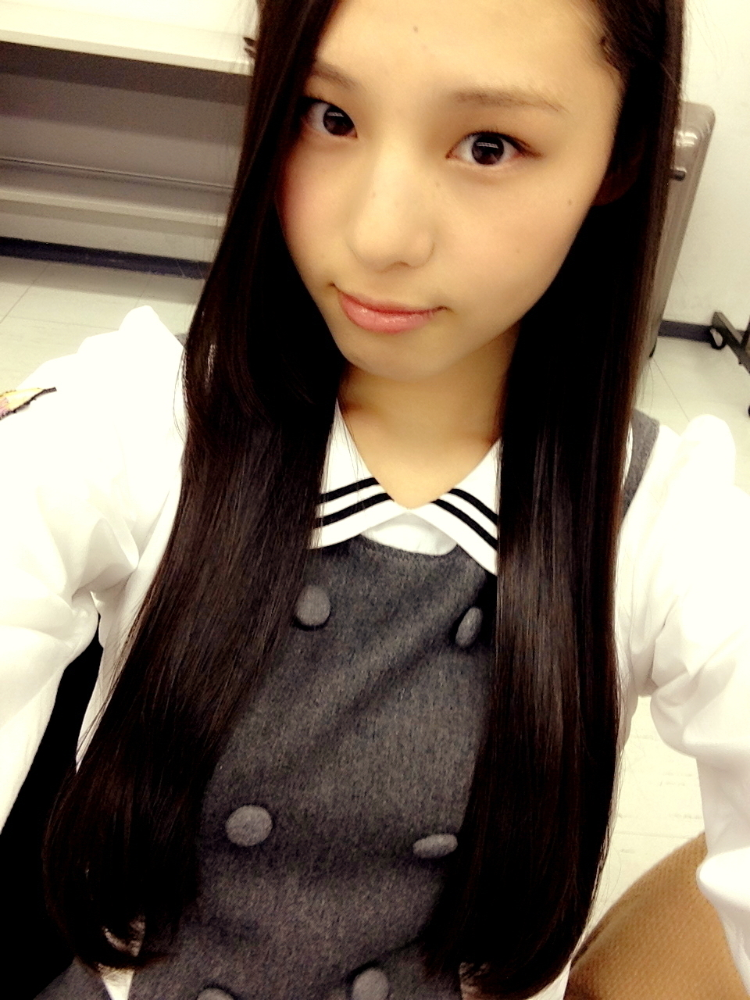
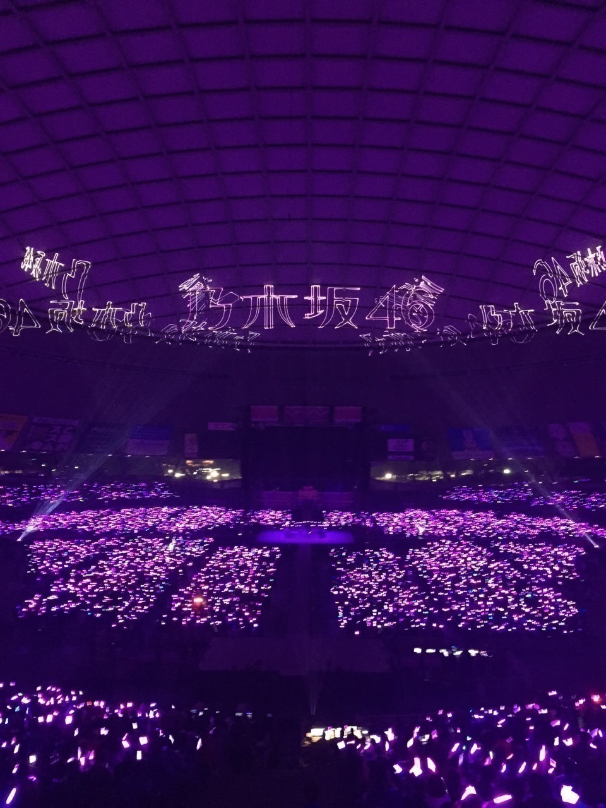

| 2015/02 23 Mon | その先のその先のその先の_( ．．*)vol.9 |
みなさんこんばんはー！
さがらいおりです！

2 / 22
乃木坂46 3 rd Year Birthday Live
昨日は乃木坂46の 3 歳の誕生日
一緒に祝ってくれた皆さん
ありがとうございました♡♡
セットリスト
1 st
ぐるぐるカーテン
会いたかったかもしれない
左胸の勇気
白い雲にのって
乃木坂の詩
MC
失いたくないから
2 nd
おいでシャンプー
ハウス！
心の薬
狼に口笛を
水玉模様
偶然を言い訳にして
3 rd
走れ！Bicycle
人はなぜ走るのか
海流の島よ
涙がまだ悲しみだった頃
せっかちなかたつむり
音が出ないギター
4 th
制服のマネキン
指望遠鏡
やさしさなら間に合ってる
ここじゃないどこか
春のメロディー
MC
渋谷ブルース
MC
5 th
君の名は希望
ロマンティックいか焼き
シャキイズム
サイコキネシスの可能性
でこぴん
13日の金曜日
~休憩~
6 th
ガールズルール
人間という楽器
コウモリよ
世界で一番孤独なLover
扇風機
他の星から
7 th
バレッタ
MC
私のために誰かのために
やさしさとは
初恋の人を今でも
月の大きさ
そんなバカな･･･
8 th
気づいたら片想い
吐息のメソッド
生まれたままで
MC
孤独兄弟
ダンケシェーン
ロマンスのスタート
~休憩~
9 th
夏のFree&Easy
何もできずにそばにいる
ここにいる理由
その先の出口
無口なライオン
僕が行かなきゃ誰が行くんだ？
アルバム
あなたのために弾きたい
自由の彼方
僕がいる場所
なぞの落書き
誰かは味方
革命の馬
傾斜する
ひとりよがり
10 th
転がった鐘を鳴らせ！
Tender days
遠回りの愛情
私、起きる。
あの日 僕は咄嗟に嘘をついた
何度目の青空か？
Encore
ハウス！
会いたかったかもしれない
MC
13日の金曜日
11 th
命は美しい
MC
乃木坂の詩
いおりが参加した曲は
｢
｣がついてるところです！
昨日のライブではほとんど
大和さんのポジションに入りました！
大和さんを真似するというよりは
自分の色を出そうと思って
先輩方に囲まれながらも
自分なりに精一杯頑張りました！！
あおりの曲とかも
今までにないくらい
飛び跳ねてはしゃぎました♪♪
そして新曲初披露！！
自分が選抜の一員として
西武ドームで新曲を踊れたことに感動してました(>_<)！
これまでのライブの中で
個人的に 1 番気合が入ってたライブだったから
終わった時は達成感でいっぱいでした！
皆さん楽しんでくれたかな？

そして、このライブに向けて
たくさんの方が動いてくださって
本当に本当に感謝してます。
演出家の方やダンスの先生も
時には厳しく時には優しく
教えてくれたりしてくれて
出来ないところは
ちゃんと指摘してくれるのが
本当にありがたいです
それから
裏でもたくさんのスタッフさんが動いてくれたから
今回のライブも成功させることができたと思います。
本当にありがとうございました！
4 年目もよろしくお願いしますm(_ _)m
それからそれから
2 期生の純奈、琴子、絢音、蘭世、れなち、みり愛
昇格おめでとう
もう純奈の名前が出た瞬間隣にいた
みり愛の頭に抱きついて
涙してました
本当に自分の事のように嬉しかった
選抜に入ってからも
ずっと｢相楽伊織｣が引っかかってて
でも自分に余裕なんかなくて
自分の事でいっぱいっぱいで
どうすることも出来なかったから
本当は安心の涙だったのかなと思う
でも改めておもえば
本当におめでとうって思うし
これからも 2 期生みんなで
支えあって切磋琢磨していけたら
いいなって思ってます
リハーサルの時にみささんから
言って頂いた言葉だけど
もっと乃木坂46の一員としての自覚を持って
もっともっと
頑張っていこうって思いました！！
これからもよろしくお願いします！
i o r i .

コメント(419)
2015/02/23 17:50